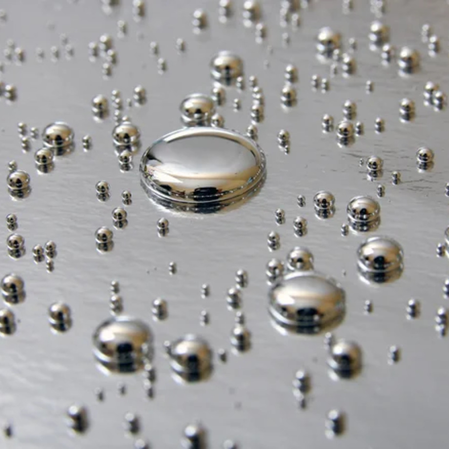

Hаучные открытия 2023 года
Давайте окунемся в них - самые большие научные открытия 2023 года
Введение
Каждый год ученые совершают прорывы во всевозможных важных областях,
и 2023 год не стал исключением. В обществе, где у каждого в кармане
есть мощный компьютер, некоторые автомобили могут ездить сами (но
при этом не летать), а простое упоминание продукта на нужном
устройстве может привести к его появлению на пороге вашего дома,
удивляться все труднее - но научные достижения 2023 года все еще
могут заставить некоторые челюсти упасть на пол, а глаза комично
выскочить из голов. С появлением чатбота ChatGPT, работающего на
основе искусственного интеллекта, ИИ стал главной новостью 23-го
года, и эта область породила еще больше захватывающих инноваций, о
которых вы, возможно, еще не знаете.
Источник молодости
В 2012 году японский биолог Шинья Яманака получил часть
Нобелевской премии по физиологии и медицине за открытие ряда
белков, способных изменять конфигурацию обычных, повседневных
клеток, превращая их в суперуниверсальные стволовые клетки
Более десяти лет спустя пара американских специалистов сообщила
что с помощью такой терапии удалось увеличить продолжительность
жизни пожилых мышей в два раза. Другое исследование (Cell),
проведенное несколько противоречивым гарвардским генетиком
Дэвидом Синклером, подтвердило гипотезу Синклера о том, что
старение связано с определенным типом деградации ДНК, и обратило
вспять некоторые из этих эффектов, восстановив деградацию с
помощью факторов Яманаки.
Мини роботы

Состоящие из жидкого металла галлия и чрезвычайно крошечных
частиц сплава, роботы способны выдерживать вес, в 30 раз
превышающий их вес в твердом состоянии, но под воздействием
магнитного поля они превращаются в лужицы, которые можно
толкать, тянуть и растягивать для выполнения задач с помощью
манипуляций с магнитным полем.
Прежде чем их можно будет использовать в медицинских процедурах,
пройдет еще немало времени, но если речь идет о другом
применении, например, о выполнении мелких механических операций
на космических кораблях, то технология уже практически готова.
Живые чернила
Конечные продукты процесса 3D печати часто могут быть слишком
хрупкими или слишком податливыми - но в феврале 2023 года
исследователи из Инженерной школы EPFL опубликовали в журнале
Materials Today исследование, в котором подробно описано новое
решение этой проблемы
Это решение - живые бактерии, Sporosarcina pasteurii,
критический ингредиент того, что команда называет "BactoInk".
Специальные чернила можно использовать в любом стандартном 3D
принтере, и для этого не требуется особый процесс печати, но
готовый продукт, обработанный раствором, минерализуется и
затвердевает в течение нескольких дней. По окончании процесса
содержание минералов в объекте составляет более 90 процентов,
что делает его гораздо более прочным, чем обычные объекты,
напечатанные методом 3D.
Система письма
До недавнего времени о значении пещерных рисунков можно было
только догадываться, но в январе 2023 года исследование,
опубликованное в "Кембриджском археологическом журнале",
возможно, наконец-то определило их назначение.
Исследователи сопоставили символы с циклами рождения животных,
изображенных на рисунках, и 13 годовыми лунными циклами, и, что
удивительно, обнаружили закономерность. Она указывает на то, что
эти знаки могут быть очень ранней - возможно, самой ранней -
системой обозначений, связанной с циклами спаривания и рождения
видов, которые могли быть добычей наших предков. В частности,
один символ, напоминающий букву "Y", был связан с рождением -
это первый известный случай такой связи в пещерных метках.
Мышь от двух самцов
С помощью комбинации методов клетки кожи из хвостов мышей были
сначала превращены в стволовые клетки. Затем эти очень гибкие и
податливые клетки были преобразованы в женские клетки, из
которых были получены яйцеклетки. Эти яйцеклетки оплодотворялись
и подсаживались самкам мышей, и в семи случаях из 630 попыток из
них вырастали здоровые мышиные детеныши, которые нормально
развивались и могли иметь своих собственных мышат, когда
становились взрослыми. Технология также рассматривается как
потенциальный способ спасения исчезающих видов от вымирания с
помощью клеток одной особи мужского пола.